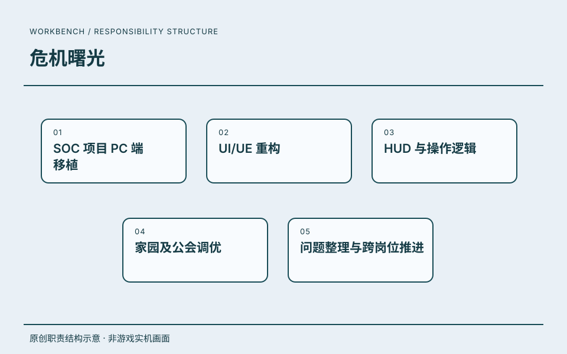

02 / PC 体验工作台 · PROJECT 01
危机曙光.
高级系统策划
SOC 项目的 PC 端移植与体验调整。围绕 UI/UE、HUD、操作逻辑，以及家园与公会系统开展工作。
职责沿用该段公司经历的记录；共同职责不逐项归为单个项目的独立成果。

原创职责结构示意 · 非游戏实机画面ROLE / 我的角色高级系统策划
把 PC 端的界面、操作与系统体验放在一起看，再沿着问题清单推进调整。
SCOPE / 工作范围工作职责
- 01SOC 项目 PC 端移植
- 02UI/UE 重构
- 03HUD 与操作逻辑
- 04家园及公会调优
- 05问题整理与跨岗位推进
RECORD / 可追溯记录项目记录
《危机曙光》列于这段任职经历中。
- 任职公司
- 英雄游戏科技股份有限公司
- 角色
- 高级系统策划
- 时间
- 2025.07—2026.07.23
任职、角色与职责依据本人履历及确认。图示是本站原创的职责结构表达。
DESIGN JOURNAL / 方案摘要
项目方案.
读背景、职责、方案与可证实产出。
 PC界面与操作 · 本站原创脱敏结构图
PC界面与操作 · 本站原创脱敏结构图PROJECT / 工作说明PC界面与操作
项目背景
PC移植需要重新梳理界面层级、HUD操作提示与系统交互。
本人职责
沿用已确认的PC移植、UI/UE、HUD操作和家园公会调优职责；未署名文档不单独归为我的独立方案。
关键方案
围绕界面遮挡、可用状态表达和引导文案整理体验问题，推进跨岗位调整。本文仅说明已确认的职责范围，不将具体发电机或按键自定义方案归为个人设计。
可证实产出
可证实职责范围为PC体验与协作推进；现有资料补充了项目问题背景，没有新增个人独立实现或量化效果主张。
摘要依据：本人已确认履历；项目界面交互资料仅作背景核对。本站依据已确认职责绘制；PC任务原图与同事署名需求未公开。
放大流程图 ↗阅读文档摘要 ↗ 在页面内阅读流程图＋
可滚动阅读大图；也可打开流程图缩放。下方文字提供同等内容。